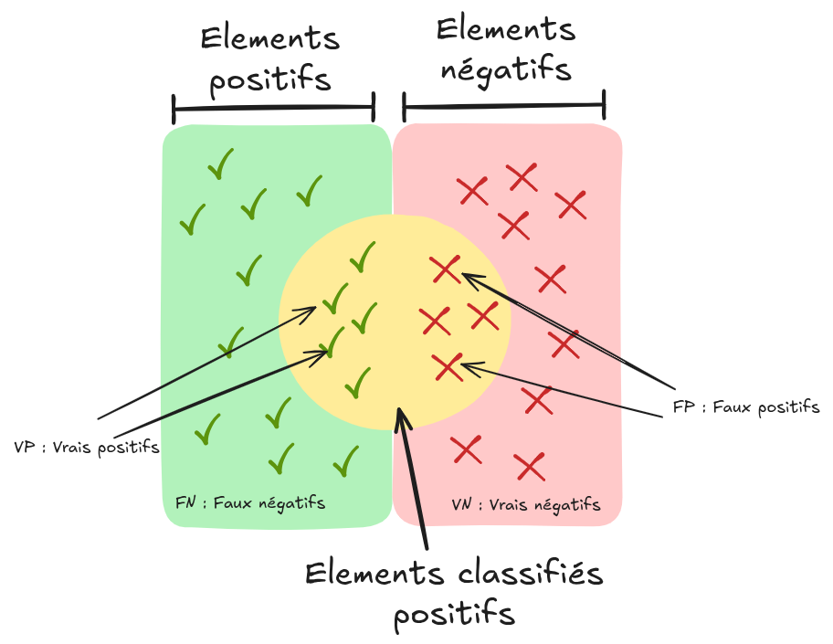

模型评估指标#
模型评估是训练过程中的关键步骤。目前为止，我们主要使用测试损失（test loss）或基本指标（如准确率）来评估模型。根据不同的问题，可以选择不同的评估指标来全面衡量模型的性能。本课程将介绍多种常用的评估指标，以便根据实际需求选择合适的指标。
分类模型的评估指标#
混淆矩阵#
在二分类问题中，模型的预测结果可以通过以下方式进行可视化：

来源：维基百科
基本术语说明：
假阳性（FP）：实际为负样本，但被模型错误预测为正样本。
真阳性（TP）：实际为正样本，且被模型正确预测为正样本。
假阴性（FN）：实际为正样本，但被模型错误预测为负样本。
真阴性（TN）：实际为负样本，且被模型正确预测为负样本。
这些概念可以用混淆矩阵表示：

注意： 在多类别分类问题中，混淆矩阵有助于识别模型在各类别之间的混淆情况。
精确率、召回率与特异度#
通过混淆矩阵，我们可以计算以下关键指标：
精确率（Precision）：\(P = \frac{TP}{TP + FP}\)，表示被预测为正样本中实际为正样本的比例。
召回率（Recall，或称灵敏度）：\(R = \frac{TP}{TP + FN}\)，表示实际正样本中被正确预测的比例。
特异度（Specificity，或称选择性）：\(S = \frac{TN}{TN + FP}\)，表示实际负样本中被正确预测的比例。
准确率（Accuracy）#
准确率（Accuracy）（注意：与精确率不同）衡量的是模型预测正确的样本占总样本的比例，计算公式为： \(A = \frac{TP + TN}{TP + TN + FP + FN}\)
注意： 在类别不平衡（class imbalance）的情况下，准确率可能会产生误导，应谨慎使用。
F1 分数#
F1 分数是精确率与召回率的调和平均数，常用于综合评估模型性能： \(F1 = 2 \times \frac{P \times R}{P + R}\)
当精确率与召回率接近时，F1 分数会接近它们的算术平均值。
ROC 曲线#
ROC 曲线（Receiver Operating Characteristic）用于展示二分类模型在不同决策阈值下的性能表现，包含以下两个轴：
横轴（X轴）：假阳性率（\(1 - 特异度\)），即被错误预测为正样本的负样本比例。
纵轴（Y轴）：真阳性率（\(召回率\)），即被正确预测的正样本比例。
曲线上的每个点对应一个不同的决策阈值。

模型性能通常通过计算曲线下面积（AUROC）来评估：
随机分类器：AUROC = 0.5
完美分类器：AUROC = 1
对数损失（Log Loss）#
可以直接使用测试数据上的**损失值（loss）**作为评估指标。由于损失函数直接反映模型的优化目标，在许多情况下，它已经足够用于评估模型性能。
回归模型与自编码器的评估指标#
平均绝对误差（MAE）#
在回归模型或自编码器中，通常通过计算预测值与真实值之间的距离来评估性能。**平均绝对误差（MAE）**是所有样本绝对误差的平均值，计算公式为： \(\text{MAE} = \frac{1}{n} \sum_{i=1}^{n} \left| y_i - \hat{y}_i \right|\)
均方误差（MSE）#
**均方误差（MSE）**是所有样本误差平方的平均值，常用于回归任务的评估，计算公式为： \(\text{MSE} = \frac{1}{n} \sum_{i=1}^{n} \left( y_i - \hat{y}_i \right)^2\)
目标检测与图像分割的评估指标#
平均精确率（AP）与均值平均精确率（mAP）#
在目标检测任务中，仅使用精确率无法全面评估模型性能，需要在不同召回率阈值下进行综合评估。**平均精确率（AP）**的计算方式如下：
连续形式： \(\text{AP} = \int_{0}^{1} \text{Precision}(r) \, \text{d}r\)
离散形式： \(\text{AP} = \sum_{k=1}^{K} \text{Precision}(r_k) \cdot (r_k - r_{k-1})\)
其中：
\(\text{Precision}(r)\)：在召回率为 \(r\) 时的精确率
\(K\)：召回率的评估点数量
\(r_k\) 与 \(r_{k-1}\)：第 \(k\) 个与第 \(k-1\) 个召回率阈值
**均值平均精确率（mAP）**是多类别目标检测问题中，所有类别 AP 的平均值，用于全面评估模型在所有类别上的整体性能： \(\text{mAP} = \frac{1}{C} \sum_{c=1}^{C} \text{AP}_c\)
交并比（IoU）#
**交并比（IoU）**是目标检测与图像分割任务中的核心指标。在目标检测中，通常设定一个 IoU 阈值，低于该阈值的检测结果被视为无效（不计入 mAP 计算）；在图像分割中，IoU 直接用于评估分割质量。
计算公式为： \(\text{IoU} = \frac{|\text{预测结果} \cap \text{真实标签}|}{|\text{预测结果} \cup \text{真实标签}|}\)
注意： IoU 对小目标和稀有类别存在惩罚效应。为减少此偏差，可改用 Dice 系数。
Dice 系数#
在图像分割任务中，Dice 系数常用于替代 IoU，其计算公式为： \(\text{Dice} = \frac{2 \times |\text{预测结果} \cap \text{真实标签}|}{|\text{预测结果}| + |\text{真实标签}|}\)
Dice 系数更强调预测结果与真实标签之间的重叠部分，对共同区域赋予更高权重。
语言模型的评估#
评估语言模型是一项复杂任务。虽然可以使用测试损失（test loss）进行评估，但它无法全面反映模型的实际性能。目前已有多种方法与基准测试（benchmark），可从不同维度评估语言模型。
参考资源：
图像生成模型的评估#
图像生成模型的评估较为复杂，通常需要通过人工评估来判断生成图像的质量。
参考资源：